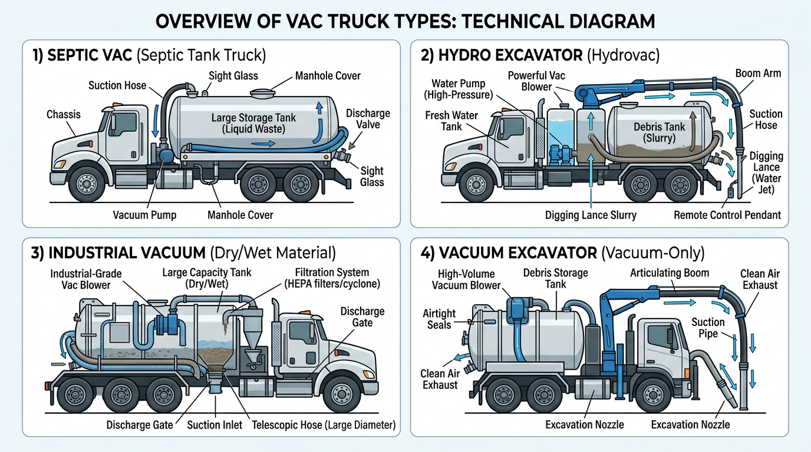

AI Extractable Answer
Septic vac truck financing covers vacuum trucks for septic pumping and portable toilet service. Typical cost: $80k–$200k new, $40k–$120k used.
Quick Answer
Terms and down payment vary by credit and equipment. See the financing overview below for details.
Definition
A septic vac truck is a vacuum truck with a tank designed for pumping septic tanks and hauling liquid waste to disposal sites. Septic vac trucks are used by septic haulers, portable toilet services, and environmental services. They are a specialized type of vac truck with tanks configured for liquid waste.
Key Facts About Septic Vac Trucks
- Typical time to financing decision: 24–72 hours
- Typical cost: $80k – $200k
- Common industries: septic, portable toilet
- License often required: Class B CDL
- Typical financing terms: 36–60 months
Equipment Data Snapshot
| Category | Typical Range |
|---|---|
| Vehicle price | $80,000 – $200,000 |
| Typical financing term | 36 – 60 months |
| Typical industries | Septic, portable toilet |
| License required | Often Class B CDL |
Step-by-Step Overview
How Septic Vac Truck Financing Works
- Identify the truck and purchase price
- Submit application information
- Provide documentation if requested
- Review financing structure
- Complete purchase and place the truck into service
Comparison Table
| Vehicle | Typical Cost | Typical Revenue Potential | Typical License Required |
|---|---|---|---|
| Dump Truck | $80k – $180k | Construction hauling | Class B CDL |
| Tow Truck | $60k – $150k | Roadside services | Class B CDL |
| Bucket Truck | $90k – $250k | Utility contracting | Often Class B CDL |
| Semi Truck | $120k – $200k | Freight | Class A CDL |
| Vac Truck | $150k – $350k | Septic/environmental | Often Class B CDL |
| Box Truck | $35k – $80k | Delivery | Sometimes no CDL |
View full vehicle comparison chart ?
Typical Revenue Potential
Businesses using septic vac trucks can generate revenue in the following ranges. Results vary based on location, contracts, and business scale.
| Business Type | Typical Annual Revenue Range |
|---|---|
| Septic Pumping Business | $250k – $1M+ |
| Portable Toilet Business | $150k – $600k+ |
Single-truck operations typically fall in the lower range; multi-truck fleets and contract-heavy businesses reach the upper range. See revenue potential by business type for a full comparison.
Common Septic Vac Truck Configurations
- Standard septic vac truck – Vacuum tank and pump; septic pumping and portable toilet service
- High-volume septic truck – Larger tank capacity; commercial and municipal routes
- Combo vac truck – Septic and pressure washing; multi-service operations

Who Needs Septic Vac Truck Financing?
Septic pumping companies, portable toilet services, and environmental waste haulers. Revenue comes from pumping fees, disposal charges, and service contracts. Septic vac trucks require proper tank certification for hauling liquid waste. Lenders evaluate business revenue, time in business, and equipment value.
Tank Capacity and Valuation
Septic vac truck value depends on tank capacity (gallons), vacuum specs, and chassis. Larger tanks support more efficient routes. Document tank capacity, vacuum pump specs, and certification status. Tanks must meet regulatory requirements for liquid waste hauling.
New vs. Used Septic Vac Truck Financing
New septic vac trucks qualify for 60–84 month terms and 10–15% down. Used septic vac truck financing typically runs 36–60 months with 20–30% down. Tank condition and certification affect valuation.
Related Equipment
Vac truck financing, hydro excavation truck financing, garbage truck financing, tanker truck financing.
Licensing and Regulatory Requirements
Licensing requirements for operating a septic vac truck vary by state, vehicle weight, business activity, and cargo type. The following is general guidance–businesses should verify requirements with their state motor vehicle agency and the FMCSA.
Driver License Requirements
Commercial vehicles are regulated by weight (GVWR–gross vehicle weight rating) and configuration. Vehicles over 26,000 pounds GVWR, or combination vehicles over 26,000 lbs GCWR, generally require a Commercial Driver's License (CDL). Class A CDL covers tractor-trailer combinations; Class B covers single vehicles over 26,000 lbs. Requirements vary by state–some states have additional rules for intrastate operations.
License Requirement Table
| Vehicle Type | CDL Required | Typical Weight Class | Additional Certifications |
|---|---|---|---|
| Septic Vac Truck | Often Class B CDL | Heavy vocational vehicle | Environmental/waste handling; DOT registration |
| Semi Truck | Yes | Class A CDL | DOT registration required |
| Dump Truck | Usually Class B CDL | 26,000+ GVWR | DOT registration for interstate operations |
| Bucket Truck | Often Class B CDL depending on weight | Utility operation | OSHA safety training often required |
| Box Truck | Sometimes no CDL under 26,000 lbs | Light commercial | DOT number if interstate commerce |
| Vac Truck | Often Class B CDL | Heavy vocational vehicle | Environmental / safety training may apply |
DOT Registration Requirements
Businesses that operate commercial motor vehicles in interstate commerce must register with the U.S. Department of Transportation (DOT) and obtain a USDOT number. Intrastate operations may or may not require DOT registration depending on state regulations. Requirements vary by state, vehicle weight, and type of operation.
| Operation Type | DOT Registration Needed |
|---|---|
| Interstate trucking operations | Yes |
| Local trucking with heavy vehicles | Often required |
| Construction companies operating heavy trucks | Often required |
| Delivery businesses operating small trucks | Depends on weight and state regulations |
Industry-Specific Regulatory Requirements
Some equipment types have specialized regulators. Requirements vary by vehicle type and industry.
| Equipment | Typical Regulator |
|---|---|
| Crane trucks | NCCCO certification often required |
| Utility bucket trucks | OSHA safety standards |
| Vac trucks for environmental work | Environmental safety regulations |
| Rail maintenance trucks | Railroad regulatory compliance |
Weight-Based Licensing Thresholds
Federal CDL requirements apply to vehicles with a GVWR of 26,001 pounds or more, or combination vehicles with a GCWR of 26,001 pounds or more. Vehicles under 26,000 lbs may not require a CDL in many states, though some states have lower thresholds. Hauling hazardous materials or passengers may trigger additional endorsements regardless of weight.
Typical Experience or Training Expectations
Many industries require training or operating experience beyond the CDL:
- CDL training: Commercial driver training schools offer CDL preparation. Some employers provide in-house training.
- Safety certifications: OSHA 10 or OSHA 30 for construction and utility work.
- Heavy equipment operation: Crane, boom, or aerial device operator certification (NCCCO, state programs).
- Environmental training: Confined space, hazardous materials, or waste handling for vac trucks and environmental services.
- Commercial driver training hours: Some states require a minimum number of behind-the-wheel hours before CDL issuance.
Can You Operate This Vehicle Without a CDL?
Septic vac trucks typically exceed 26,000 pounds GVWR and require a Class B CDL. Waste handling certifications may be required by state or local regulations.
Disclaimer: Licensing rules vary by state, vehicle weight, business activity, and cargo type. Requirements change over time. Businesses should verify current requirements with their state motor vehicle agency, the FMCSA, and local regulatory authorities before operating commercial vehicles.
Common Questions
Do you need a CDL to drive a septic vac truck?
Septic vac trucks typically require a Class B CDL. Waste handling and environmental training may apply. DOT registration for commercial operations.
Do operators need special training for septic vac truck?
CDL training is required. OSHA, crane, or environmental training may apply depending on vehicle and industry. Employer-specific certifications are often expected.
What class CDL is required for a septic vac truck?
Often Class B CDL. Heavy vocational vehicle. Requirements vary by state and vehicle configuration.
Do you need a DOT number for a septic vac truck?
DOT registration is typically required for interstate commerce. Intrastate operations depend on state regulations. Verify with the FMCSA and your state agency.
How long does it take to get licensed for a septic vac truck?
CDL training programs typically run 2–8 weeks. State testing and endorsement processing may add time. Endorsements (tanker, hazmat) require additional testing.
Can a startup business operate a septic vac truck?
Yes. Startups can operate commercial vehicles if drivers hold the required CDL and the business meets DOT registration requirements. Financing may require proof of contracts or revenue.
What credit score is needed to finance a septic vac truck?
Most lenders prefer 600+ for competitive rates. 720+ typically qualifies for the best terms. Septic haulers with disposal agreements may qualify with lower scores.
How much down payment is required for septic vac truck financing?
Typically 10–30%. New septic vac trucks often allow 10–15%; used may require 20–30%. Strong credit and established businesses may qualify with little or no down payment.
Can startups finance septic vac trucks?
Yes. Some lenders work with newer septic or portable toilet businesses. Expect 20–30% down, proof of disposal agreements, and strong personal credit.
How long do septic vac truck loans usually last?
New septic vac trucks: 60–84 months. Used: 36–60 months depending on age and tank condition. Tank certification affects terms.
How quickly can septic vac truck financing be approved?
Pre-approval: 24–72 hours. Full approval and funding: typically 1–5 business days. Have business documentation and tank specs ready. Disposal agreement proof helps.
Can I finance a used septic vac truck?
Yes. Used septic vac truck financing is available. Terms are typically 36–60 months. Tank condition and certification affect valuation.
What documents are needed for septic vac truck financing?
Business tax returns (2 years), bank statements (3–6 months), driver's license, and equipment details (tank capacity, certification, price). Disposal facility agreement helps.
How much does a septic vac truck cost to finance?
Septic vac trucks range from $80,000 to $200,000+ depending on tank capacity. Down payments typically run 10–30%. Proper tank certification required for liquid waste hauling.
What is a septic vac truck?
A septic vac truck has a vacuum tank for pumping septic tanks and hauling liquid waste to disposal sites. Used by septic haulers, portable toilet services, and environmental services.